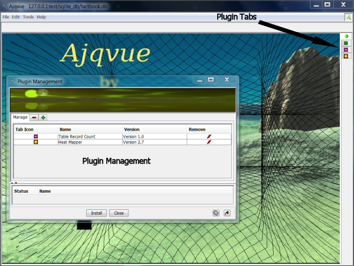

The Ajqvue application supports a fully modular plugin
architecture. The plugin architecture allows the application to dynamically load
code from the installation's sub-directory, lib/plugin, as the
program is initialized when first run. Any Java JAR file placed in that directory
will be scanned for the proper contents that can be identified as a Ajqvue plugin.
Once identified the Ajqvue application will attempt to add that plugin as one
of the main tabs the user will see on the right hand side of the Ajqvue window
as shown in Figure 1. As an alternative to loading plugins automatically from
the plugin directory a user may use the Tools | Plugin Management interface to
manually load plugins that thereafter will also be available for use. Once a plugin
is loaded then it will have access to the Ajqvue public API. What this mean is
the plugin may obtain connections to the database, manipulate data in tables or
create custom evaluation routines to analyze and report database contents.

Figure 1. Ajqvue Main Interface
Plugin_Module
The core aspect of the Ajqvue plugin module architecture is
oriented around the abstract Plugin_Module class. This class implements
the Plugin Module Interface which defines the needed routines, class methods, that
are required for loading and running a plugin module. The code for the Plugin_Module
is provided here and shown in Listing 1. below. From this code listing we
see the Plugin_Module class has a default no argument constructor and several
methods. All plugins which will extend this class should do no initialization
work in the constructor and just allow the default super() to be called. The key
initialization for a plugin should be allocated to the initPlugin() method. The
initPlugin() method has two argument instances of Main_Frame and String which will
not be discussed or used in this basic tutorial for plugins, but will be covered
in more advanced plugin module article(s). Just as a note at this time, the Main_Frame
argument instance will allow a plugin to gain access to Ajqvue's standard database
Menu commands. Now from the listing one should see that the initPlugin() method is
commented out for the Plugin_Module abstract class. This is because this
will force you as a developer to implement this method in your plugin module class.
Code Listing 1: (Plugin_Module.java)
//=================================================================
// Plugin_Module Class
//=================================================================
//
// This class provides the abstract framework for plugin classes
// to extends in order to properly function within the application.
//
// < Plugin_Module.java >
//
//=================================================================
// Copyright (C) 2016 Dana M. Proctor
// Version 1.2 09/25/2016
//
// This program is free software; you can redistribute it and/or
// modify it under the terms of the GNU General Public License
// as published by the Free Software Foundation; either version
// 2 of the License, or (at your option) any later version. This
// program is distributed in the hope that it will be useful,
// but WITHOUT ANY WARRANTY; without even the implied warranty
// of MERCHANTABILITY or FITNESS FOR A PARTICULAR PURPOSE. See
// the GNU General Public License for more details. You should
// have received a copy of the GNU General Public License along
// with this program; if not, write to the Free Software Foundation,
// Inc., 59 Temple Place, Suite 330, Boston, MA 02111-1307 USA
// (http://opensource.org)
//
//=================================================================
// Revision History
// Changes to the code should be documented here and reflected
// in the present version number. Author information should
// also be included with the original copyright author.
//=================================================================
// Version 1.0 Production PluginModule Class.
// 1.1 Renamed to Plugin_Module Class.
// 1.2 Comment Changes for getPanel() Methods.
//
//-----------------------------------------------------------------
// danap@dandymadeproductions.com
//=================================================================
package com.dandymadeproductions.ajqvue.plugin;
import java.util.ArrayList;
import javax.swing.ImageIcon;
import javax.swing.JComponent;
import javax.swing.JMenuBar;
/**
* The Plugin_Module class provides the abstract framework for
* plugin classes to extends in order to properly function within
* the application.
*
* @author Dana M. Proctor
* @version 1.2 09/25/2016
*/
public abstract class Plugin_Module implements PluginModuleInterface
{
// Class Instances.
//protected Main_Frame parent;
protected String path_FileName;
public String name;
public String author;
protected String version;
protected String description;
protected String category;
protected int size;
protected ImageIcon tabIcon;
protected JMenuBar menuBar;
protected JComponent toolBar;
protected JComponent panel;
//===========================================================
// PluginModule Constructor
//===========================================================
public Plugin_Module()
{
// Just Initialize to a NULL condition.
path_FileName = null;
name = null;
author = null;
version = null;
description = null;
category = null;
size = 0;
tabIcon = null;
menuBar = null;
toolBar = null;
panel = null;
}
//==============================================================
// Class method to setup up your plugin.
// OVERIDE THIS METHOD!
//==============================================================
/*
public void initPlugin(Main_Frame mainFrame, String path)
{
// This is where the plugin should be initialized.
parent = mainFrame;
}
*/
//==============================================================
// Class methods to get/set the plugin's file name.
//==============================================================
public String getPath_FileName()
{
return path_FileName;
}
//==============================================================
// Class method to get/set the plugin's name.
// Interface requirement.
//==============================================================
public String getName()
{
return name;
}
//==============================================================
// Class method to get/set the plugin's author.
// Interface requirement.
//==============================================================
public String getAuthor()
{
return author;
}
//==============================================================
// Class method to obtain the plugin's version number.
// Interface requirement.
//==============================================================
public String getVersion()
{
return version;
}
//==============================================================
// Class method to obtain the plugin's description.
// Interface requirement.
//==============================================================
public String getDescription()
{
return description;
}
//==============================================================
// Class method to obtain the plugin's category.
// Interface requirement.
//==============================================================
public String getCategory()
{
return category;
}
//==============================================================
// Class method to obtain the plugin's size.
// Interface requirement.
//==============================================================
public int getSize()
{
return size;
}
//==============================================================
// Class method to allow the collection of a image icon that
// will be used as an identifier in the tab structure.
//
// NOTE: The tab icon should be no larger than 16 x 16.
// Interface requirement.
//==============================================================
public ImageIcon getTabIcon()
{
return tabIcon;
}
//==============================================================
// Class method to obtain the plugin's JMenuBar that can be
// used to control various aspects of the modules functionality.
// Interface requirement.
//==============================================================
public JMenuBar getMenuBar()
{
return menuBar;
}
//==============================================================
// Class method to allow the collection of a JToolBar to be
// used with the plugin module.
// Interface requirement.
//==============================================================
public JComponent getToolBar()
{
return toolBar;
}
//==============================================================
// Class method for returning a JComponent, JPanel or JFXPanel
// for inclusion in the application's main tab. Interface
// requirement.
//==============================================================
public JComponent getPanel()
{
return panel;
}
//==============================================================
// Class method for being able to set the database tables, occurs
// if the database is reloaded.
// Interface requirement.
//==============================================================
public void setDBTables(ArrayList tableNames)
{
// Do what you will if you need database table names.
}
//==============================================================
// Class method to allow the plugin to start activities back
// up after a stop() sequence.
// (USED FOR CONTROLLING THREADS)
//==============================================================
public void start()
{
// Do what you will to start again from stop.
}
//==============================================================
// Class method to allow the plugin to temporarily stop
// activities that may then be started again.
// (USED FOR CONTROLLING THREADS)
//==============================================================
public void stop()
{
// Do what you will to notify stop.
}
//==============================================================
// Class method to allow the plugin to close activities pending
// a closing of the application.
//==============================================================
public void shutdown()
{
// Do what you will to notify pending closing.
}
}
The key aspect of the initPlugin() method that a developer should know
is that it should create a custom JPanel or JFXPanel component that Ajqvue
will use to load into its tabbed pane for your plugin. That panel will be
what users will see when your plugin tab is selected from the Ajqvue's main
interface window on the right hand side. The correlated companion class method
in the Plugin_Module class is the getPanel() method. That method should return
the JComponent that is created in the initPlugin() method.
Other methods in the Plugin_Module class, allow the
developer to return the name and an icon that will be used to identify a
plugin's tab. The name will appear as the tooltip for the tab and the icon
will become the insignia for the tab. The icon returned through the getTabIcon()
method should be no larger than 14 x 14 pixels. Two of the other getter methods
shown in the listing allows a plugin to create its own Menu and Toolbar that
will be used in conjunction with the module. Several other getter methods are
also provided that allow a plugin to provide various other information for
consumption. The The last method that is included in the Plugin_Module
class is the setDBTables() method. This routine allows for your plugin to
get an updated reload of the database tables that may occur during the running
of the Ajqvue application.
Basic Plugin Example
A basic plugin module example outlined below is a
completely functional module that returns the record, row, count for a selected
table. We start out with the basic outline for a Plugin_Module class, called PluginModule
that extends Ajqvue's as show in code Listing 2., and create a class to
handle the JPanel component creation in the initPlugin() method. As the code below
shows the PluginModule class has now added the tableRecordCountPanel class
instance. That new instance is a type TableRecordCountPanel and extends
the JPanel object from the Java API. The tableRecordCountPanel instance is
created in the initPlugin() method and takes an argument of the database's
tables in the form of a ArrayList. Here is the illustration of a module using
the Ajqvue public API to access the table names from Ajqvue's ConnectionManager
class.
Code Listing 2: (Table Record Count PluginModule.java)
//=================================================================
// TableRecordCount PluginModule Class
//=================================================================
//
// This class provides the hook to incorporate a external plugin
// module into the Ajqvue application.
//
// < PluginModule.java >
//
//=================================================================
// Copyright (C) 2016 Dana M. Proctor
// Version 1.1 09/24/2016
//
// This program is free software; you can redistribute it and/or
// modify it under the terms of the GNU General Public License
// as published by the Free Software Foundation; either version
// 2 of the License, or (at your option) any later version. This
// program is distributed in the hope that it will be useful,
// but WITHOUT ANY WARRANTY; without even the implied warranty
// of MERCHANTABILITY or FITNESS FOR A PARTICULAR PURPOSE. See
// the GNU General Public License for more details. You should
// have received a copy of the GNU General Public License along
// with this program; if not, write to the Free Software Foundation,
// Inc., 59 Temple Place, Suite 330, Boston, MA 02111-1307 USA
// (http://opensource.org)
//
//=================================================================
// Revision History
// Changes to the code should be documented here and reflected
// in the present version number. Author information should
// also be included with the original copyright author.
//=================================================================
// Version 1.0 Production TableRecordCount PluginModule.
// 1.1 Updated Reference to Ajqvue PluginModule to Plugin_Module.
//
//-----------------------------------------------------------------
// danap@dandymadeproductions.com
//=================================================================
package com.dandymadeproductions.tablerecordcount;
import java.util.ArrayList;
import javax.swing.ImageIcon;
import javax.swing.JPanel;
import com.dandymadeproductions.ajqvue.datasource.ConnectionManager;
import com.dandymadeproductions.ajqvue.gui.Main_Frame;
import com.dandymadeproductions.ajqvue.plugin.Plugin_Module;
/**
* The PluginModule class provides the hook to incorporate a external plugin
* module into the Ajqvue application.
*
* @author Dana M. Proctor
* @version 1.1 09/24/2016
*/
public class PluginModule extends Plugin_Module
{
// Class Instances
private String pluginName, pluginAuthor;
private TableRecordCountPanel tableRecordCountPanel;
//==============================================================
// PluginModule Constructor.
//==============================================================
public PluginModule()
{
super();
}
//==============================================================
// Class method to initialize your plugin.
//==============================================================
public void initPlugin(Main_Frame parentFrame, String path)
{
pluginName = "Table Record Count";
pluginAuthor = "Dandy Made Productions";
tableRecordCountPanel = new TableRecordCountPanel(path, ConnectionManager.getTableNames());
}
//==============================================================
// Class method to meet the interface requirements for getting
// the name of the module.
//==============================================================
public String getName()
{
return pluginName;
}
//==============================================================
// Class method to meet the interface requirements for getting
// the author of the module.
//==============================================================
public String getAuthor()
{
return pluginAuthor;
}
//==============================================================
// Class method to return the version release number of the
// plugin module.
//==============================================================
public String getVersion()
{
return TableRecordCountPanel.getVersion();
}
//==============================================================
// Class method to meet the interface requirements of returning
// a ImageIcon that will be used as the plugin's tab Icon.
//==============================================================
public ImageIcon getTabIcon()
{
return tableRecordCountPanel.getTabIcon();
}
//==============================================================
// Class method to meet the interface requirements for returning
// a JPanel for inclusion in the Ajqvue application's main
// tab.
//==============================================================
public JPanel getPanel()
{
return tableRecordCountPanel;
}
//==============================================================
// Class method to meet the interface requirements for being
// able to set the database tables.
//==============================================================
public void setDBTables(ArrayList tableNames)
{
tableRecordCountPanel.reloadPanel(tableNames);
tableRecordCountPanel.repaint();
}
}
The rest of the PluginModule class is similar to the Ajqvue Plugin_Module
class with the overiden methods getName() and getPanel() returning to the
Ajqvue application the String "Table Record Counts" for the tooltip in the
plugin's tab and of course the tableRecordCountPanel that will be seen.
The last method setDBTables() in the class reloads the database's table
names via a class method, reloadPanel(), in the TableRecordCountPanel class.
In proceeding with the discussion of a basic plugin module
we now look in depth at the TableRecordCountPanel class. Instead of showing the
listing in length for that class the major elements are described as required.
All resources for the discussion in this article are made available via links
at the end. Any classes given as part of this tutorial are covered by the GPL
and may be used in accordance with that license.
As indicated earlier the TableRecordCountPanel class extends the JPanel
Java API and in addition implements the ActionListener interface. By
extending the JPanel class from Java we inherit all the aspects of a panel
object needed as required by the Plugin_Module class and with the ActionListener
we enable the ability to process events. The TableRecordCountPanel class
instance definitions and constructor are shown in Listing 3. below. The
class defines several instances that will be used to display and process record
counts for tables in the database. The main class instance defined is a
JComboBox called tableSelectionComboBox. This component will be used to
select the name of the table to have its records counted. A second object
is a JLabel that will be used to indicate the result of a record count. An
additional class instance will be used to disable the processing of events when
a record count is processing or table names are reloaded and is called
disableActions.
//=================================================================
// TableRecordCount TableRecordCountPanel
//=================================================================
//
// This class provides the panel that holds components
// associated with Ajqvue basic tutorial for a plugin module.
//
// << TableRecordCountPanel.java >>
//
//=================================================================
// Copyright (C) 2016 Dana M. Proctor
// Version 1.0 09/21/2016
//
~
~
~
~
//=================================================================
// Version 1.0 Production TableFieldChartsPanel Class.
//
//-----------------------------------------------------------------
// danap@dandymadeproductions.com
//=================================================================
package com.dandymadeproductions.tablerecordcount;
import java.awt.event.ActionEvent;
import java.awt.event.ActionListener;
import java.sql.Connection;
import java.sql.ResultSet;
import java.sql.SQLException;
import java.sql.Statement;
import java.util.ArrayList;
import java.util.Iterator;
import javax.swing.ImageIcon;
import javax.swing.JComboBox;
import javax.swing.JLabel;
import javax.swing.JPanel;
import com.dandymadeproductions.ajqvue.Ajqvue;
import com.dandymadeproductions.ajqvue.datasource.ConnectionManager;
import com.dandymadeproductions.ajqvue.gui.panels.DBTablesPanel;
import com.dandymadeproductions.ajqvue.gui.panels.TableTabPanel;
import com.dandymadeproductions.ajqvue.utilities.AResourceBundle;
import com.dandymadeproductions.ajqvue.utilities.Utils;
/**
* The TableRecordCountPanel class provides the panel that holds
* components associated with the Ajqvue basic tutorial for a
* plugin module.
*
* @author Dana M. Proctor
* @version 1.0 09/21/2016
*/
class TableRecordCountPanel extends JPanel implements ActionListener
{
// Class Instances.
private static final long serialVersionUID = 2500935698652883672L;
private ImageIcon tabIcon;
private JComboBox
Our constructor for the class does nothing more than create these components,
assigned them default values, and add them to the panel. Note, the tableNames
ArrayList argument in the constructor that was passed from the PluginModule
and is used to fill the tableSelectionComboBox elements via a Iterator so that
we isolate those elements from that ArrayList object.
Note: The actually constructor in the code contains some additional
aspects that are used to derive resources for the class. These are not pertinent to
the discussion of a basic plugin, but will be fully covered in the the advanced
plugin turtorial.
Now in the constructor an ActionListener was added to the tableSelectionComboBox
instance so events from that object selection changes could be captured and processed
in the actionPerformed() method shown in Listing 4 below. As a user selects
a table name from the pull down menu in that ComboBox a thread is created in
the actionPerformed() method and forwards processing to the method exectueRecordCount().
In this method we do all the work for determining the record count for a table.
First a connection is obtained from the Aqjvue ConnectionManager class
public API getConnection(). Then a SQL statement object is created and the
defined schema name for the selected database table is determined from the
associated TableTabPanel in Ajqvue. A TableTabPanel is created for each
table in the database and will hold valuable information about the table such as
name, fields, keys, and other pertinent characteristics.
~
~
//==============================================================
// ActionEvent Listener method for detecting the selection of
// a table from the tableSelectionComboBox so that the row,
// record count can be processed.
//==============================================================
public void actionPerformed(ActionEvent evt)
{
Object panelSource = evt.getSource();
if (panelSource instanceof JComboBox && !disableActions)
{
Thread actionThread = new Thread(new Runnable()
{
public void run()
{
executeRecordCount();
}
}, "TableRecordCountPanel.actionThread");
actionThread.start();
}
}
//==============================================================
// Class Method to execute the required processing the selected
// database table to determine the record count.
//==============================================================
private void executeRecordCount()
{
// Setup Instances.
Connection dbConnection;
String tableName;
String schemaTableName;
String sqlStatementString;
Statement sqlStatement;
ResultSet rs;
int rowCount = 0;
tableSelectionComboBox.setEnabled(false);
disableActions = true;
// Get Connection to Database.
dbConnection = ConnectionManager.getConnection("TableRecordCountPanel executeRecordCount()");
try
{
// Create a statement object to be used with the connection.
sqlStatement = dbConnection.createStatement();
// Collect the selected table from the combobox.
tableName = (String) tableSelectionComboBox.getSelectedItem();
// System.out.println(tableName);
// Collect the table name as referenced in the database.
TableTabPanel selectedTablePanel = DBTablesPanel.getTableTabPanel(tableName);
if (selectedTablePanel == null)
return;
tableName = selectedTablePanel.getTableName();
// System.out.println(tableName);
// Collect the properly formatted schema table name with identifier
// quotes for execution in a SQL statement.
schemaTableName = Utils.getSchemaTableName(tableName);
// System.out.println(schemaTableName);
// Setup the statement string and execute the database query.
sqlStatementString = "SELECT COUNT(*) FROM " + schemaTableName;
rs = sqlStatement.executeQuery(sqlStatementString);
rs.next();
rowCount = rs.getInt(1);
// Set the record count label to reflect the results
// and close out.
recordCountLabel.setText(Integer.toString(rowCount));
rs.close();
sqlStatement.close();
}
catch (SQLException e)
{
ConnectionManager.displaySQLErrors(e, "TableRecordCountPanel executeRecordCount()");
recordCountLabel.setText("0");
tableSelectionComboBox.setEnabled(true);
disableActions = false;
}
// Close connection to database.
ConnectionManager.closeConnection(dbConnection, "TableRecordCountPanel executeRecordCount()");
tableSelectionComboBox.setEnabled(true);
disableActions = false;
}
~
~
With all the needed information for creating the required SQL statement with
regard to collecting a count of the rows in the table we execute the query and
obtain the resultset then store the value in the instance rowCount. Now all
that is required is to assign the value to the recordCountLabel and close up.
The final detail of the functional plugin example has
to do with the reloading of the table names if changes occur in the database.
A user could possibly change the characteristics of a table in the database
via a import of a SQL statement or statements. Ajqvue if told will reload
the database and through the Plugin_Module class method setDBTables() which will
in turn send this information to your plugin. The code Listing 5 shows the
TableRecordCountPanel class method reloadPanel() that is called from the PluginModule
code discussed early in code Listing 3. In this method's argument is passed
the reloaded table names from Ajqvue. The method essentially just removes
all the elements in the tableSelectionComboBox then populates it with the new
table names.
~
~
//==============================================================
// Class Method to reset the panel's table selector comboBox
// if Ajqvue is called to reload the database tables.
//==============================================================
protected void reloadPanel(ArrayList tableNames)
{
// Insure no actions are taken during reload.
tableSelectionComboBox.setEnabled(false);
disableActions = true;
// Clear the components of old data.
tableSelectionComboBox.removeAllItems();
recordCountLabel.setText("0");
// Try reloading tables.
if (!tableNames.isEmpty())
{
Iterator tableNamesIterator = tableNames.iterator();
while (tableNamesIterator.hasNext())
{
tableSelectionComboBox.addItem(tableNamesIterator.next());
}
tableSelectionComboBox.setEnabled(true);
}
disableActions = false;
}
~
~
Summary
In this tutorial for Ajqvue Plugin Basics it has been
discussed the general configuration needed to get a Ajqvue plugin installed via
placement of a JAR file in the lib/plugin directory or via the Tools |
Plugin Management menu. The main class that Ajqvue will look for in the
JAR file needs to be called PluginModule and must follow the outline for the
abstract class Plugin_Module shown in code Listing 1. A plugin
must implement at least the initPlugin() method from the Plugin Module Interface.
A basic extended Plugin_Module class was given in code Listing 2. that is a
basic plugin example and was outlined via two classes, PluginModule and
TableRecordCountPanel. This example Plugin Basics is a complete instance of an
interaction with Ajqvue's public API such has getting a connection and calling
on a TableTabPanel.